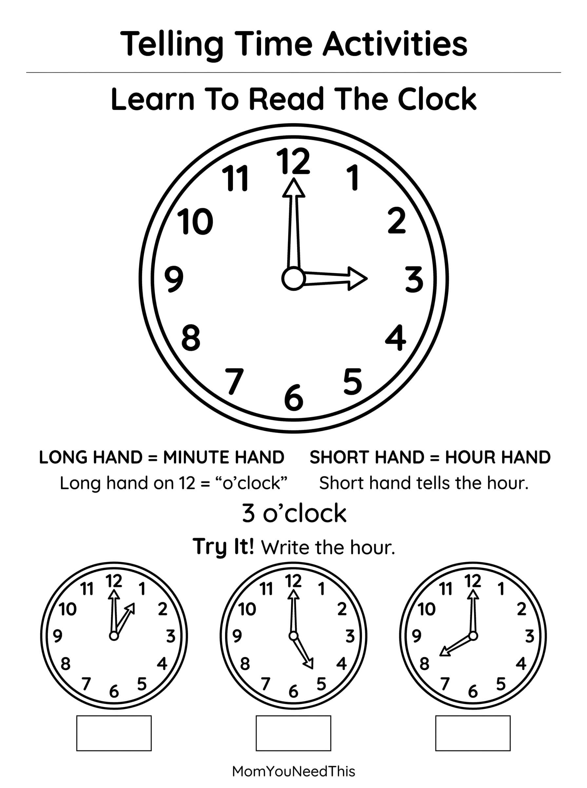

Telling Time: O'Clock Free Printable Telling Time O'Clock Activities For Kids
This free printable telling time o'clock gives toddlers and preschoolers a fun, no-prep way to learn to read clocks and tell time. Print the activities and practice telling time through play.
⏰ Learn To Tell Time
Use the printable to help your child practice reading o'clock times, recognize the numbers on a clock, and become familiar with how clocks show the time.
Free Telling Time O'Clock Printable


How To Use This Printable
- Download and print the time activities.
- Start with o’clock times, pointing to the numbers on the clock together.
- Connect time to routines — “we read stories at 7 o’clock.”
- Quiz each other with a toy clock for playful practice.
Why Learn To Tell Time?
Learning to tell time helps children develop an early understanding of numbers, sequencing, routines, and the passage of time. Starting with o'clock times gives young children a simple foundation for learning to read a clock.
🎁 Keep Exploring Free Learning Activities
Discover more printable activities, toddler resources, and learning ideas created for busy parents.
🎁 View All Free Resources❓ Telling Time O'Clock FAQ
Is this telling time o'clock printable really free?
Yes — this telling time o'clock printable is 100% free to download and print at home. No signup and no payment needed. Just tap the download button and print as many copies as you like.
What ages is this printable best for?
It is made for toddlers and preschoolers. Little ones can enjoy it with a grown-up’s help, while older preschoolers can work on it more independently.
How do we practice telling time?
Start with o’clock times and point to the numbers together. Talk about daily routines, like “we eat lunch at 12 o’clock,” to make it real.
🔗 More Free Printables You’ll Love
- Free Alphabet Coloring Pages Free printable alphabet coloring pages for little learners.
- Free Telling Time Activity Pages Free printable telling time activity pages for little learners.
- Free Letter A Formation Practice Free printable letter a formation practice for little learners.
- Free Letter A Sound Match Free printable letter a sound match for little learners.